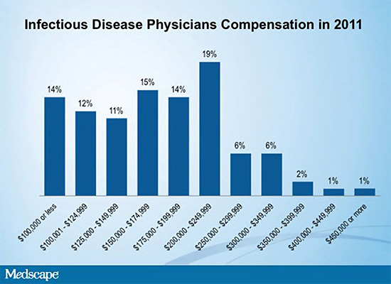
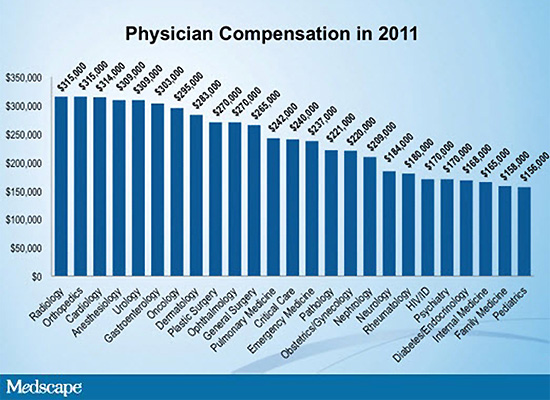

Вы когда либо интересовались, насколько Ваша жизнь как специалиста в области инфекционных болезней и/или СПИДа сопоставима с жизнью Ваших коллег (например, проживающих в США)? Зарабатывают ли они больше Вас? Больше ли у них свободного времени? Как они планируют голосовать на ближайших президентских выборах? Новостное медицинское агентство Medscape провело on-line опрос профессионалов в области медицины. Первая часть сообщения посвящена финансовым аспектам жизни наших зарубежных коллег.
Являетесь ли Вы типичным врачом-инфекционистом/специалистом в области ВИЧ-инфекции?
Вы когда либо интересовались, насколько Ваша жизнь как специалиста в области инфекционных болезней и/или СПИДа сопоставима с жизнью Ваших коллег (например, проживающих в США)? Зарабатывают ли они больше Вас? Больше ли у них свободного времени? Как они его проводят? Как они планируют голосовать на ближайших президентских выборах?
Это абсолютно нормальная черта человеческого характера — интересоваться, насколько наша жизнь сопоставима с жизнью людей, которые выбрали аналогичный профессиональный путь. Однако такого рода персональные данные иногда достаточно сложно найти. Большинство профессионалов в области не медицины не стремятся публично обнародовать свои доходы (или, по другому говоря, хвастаться или жаловаться на свою зарплату) или сознаваться, что они выбрали бы другую сферу деятельности. Кроме этого, многие предпочитают хранить в тайне и политические взгляды.
К счастью, Ваша любознательность может быть удовлетворена. Новостное медицинское агентство Medscape провело 3 различных on-line опроса профессионалов в области медицины. В таблице 1 представлены данные о количестве участников.
Таблица 1. Опрос врачей, проведенный агентством Medscape (2012)
| Опрос |
Детали, выяснявшиеся в ходе опроса |
Общее количество респондентов |
Респонденты-специалисты в области инфекционных болезней и СПИДа |
| Обзор, посвящённый финансовым аспектам деятельности врачей (Февраль 2012) |
Доходы, часы, нагрузка пациентами, работа с документами, удовлетворенность работой |
24216 |
243 |
| Обзор, посвящённый стилю жизни врачей (Январь 2012) |
Ощущение счастья, физического здоровья, семейное положение, хобби и свободное времяпрепровождение, физическая активность, взгляды на жизнь, социальное положение |
29025 |
239 |
| Избирательный опрос¹ (Май 2012) |
За кого Вы будете голосовать?
Политические взгляды, отношение к оказанию медицинской помощи, реформам в области здравоохранения |
8790 |
40 |
¹ Включены лица без высшего медицинского образования, вовлеченных в оказание медицинской помощи
Извлекая сведения из этих 3 опросов и суммируя ответы специалистов в области инфекционных болезней и/или СПИДа (далее по тексту — врачей-инфекционистов) журналисты Medscape подготовили краткую характеристику, которая может быть названа «Жизнь врача-инфекциониста».
Средства к существованию: ежегодный доход врача-инфекциониста
В 2011 г. врачи-инфекционисты получали в США, в среднем, 170000 долларов в год. Распределение ежегодных доходов варьировало от 100000 долларов в год до 450000 и более долларов в год (рисунок 1).
Рисунок 1. Сообщаемые диапазоны годовых зарплат врачей-инфекционистов

Как оказалось, средняя зарплата в 170000 долларов сопоставима со среднегодовым доходом среднестатистического врача в США (рисунок 2). Меньше всего годовая зарплата у врачей-педиатров (156000 долларов США) и специалистов в области семейной медицины (158000 долларов США), больше всего — у специалистов в области рентгенологии, ортопедии и кардиологии — 315000 долларов в год, затем идут анестезиологи и урологи — 309000 долларов в год и гастроэнтерологи — 303000 долларов в год). Таким образом, психиатры, эндокринологи, врачи общей практики, семейные врачи получали меньше, чем врачи-инфекционисты.
Рисунок 2. Годовой доход врачей в США, 2011 г. (в зависимости от специальности)

В среднем по сравнению с 2010 г. зарплата врача-инфекциониста в США уменьшилась на 2%.
Относительно более низкий уровень дохода врачей-инфекционистов в США может быть отражением меньшего числа пациентов, обращающихся к такого рода специалистам или сокращением компенсации по лечению пациентов, а также может быть связано с тем, что большее число врачей работает в академических или институтских клиниках, где традиционно ежегодный годовой доход ниже.
Врачи-инфекционисты, работающие в составе групповой практики врачей одной специальности, сообщили наиболее высокий доход (254000 долларов США в год), затем шли частнопрактикующие врачи-инфекционисты (200000 долларов США в год), затем врачи, работающие в стационарах (168000 долларов в год), а ниже всего была зарплата врачей-инфекционистов в академических клиниках (116000 долларов в год). Имевшаяся общая тенденция, что врачи-инфекционисты чаще работают по найму (особенно молодые врачи), чем занимаются частной практикой, может быть еще одним объяснением более низкого уровня дохода по сравнению с врачами других специальностей.
Из всех опрошенных респондентов 66% были мужчины, 34% — женщины. Было обнаружено, что, по сравнению с опросом, проведённым год назад, различия в доходах между мужчинами-инфекционистами и женщинами-инфекционистами увеличились. В 2011 г. средняя зарплата врачей мужчин составила 186000 долларов в год, в то время как женщины-инфекционисты зарабатывали только 140000 долларов в год. Данное различие в 32% соответствует «разрыву» в ежегодном доходе между мужчинами и женщинами, отмеченному и в целом среди врачей, и у врачей других специальностей, и может быть отражением общей тенденции того, что врачи-женщины нередко работают меньше (например, неполный рабочий день или предпочитают частичную занятость).
Более половины (52%) врачей-инфекционистов полагают, что получают достойную компенсацию своего труда, однако только 10% рассматривают себя в качестве «богатых» людей. На вопрос «Как Вы оцениваете Ваши персональные финансовые аспекты» 68% респондентов ответили «адекватные» или «более чем адекватные».
ID Docs: Money, Lifestyle, and Politics
Medscape